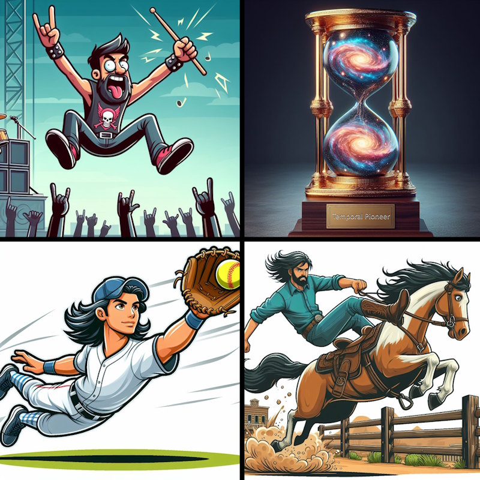
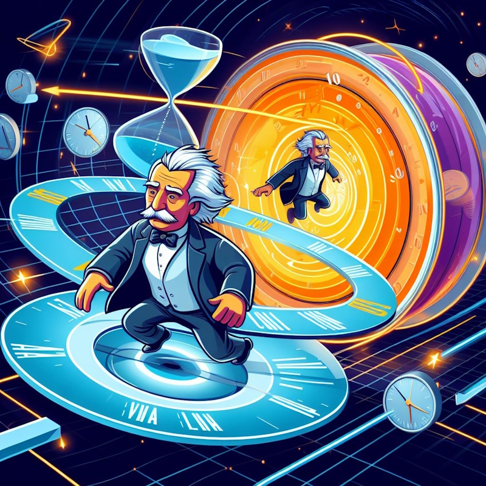

Bend it Like EinsteinYour Guide to Everyday Time DilationBarry S. StahlSolution Architect & Developer@bsstahl@cognitiveinheritance.comhttps://CognitiveInheritance.com |

|
Favorite Physicists & Mathematicians
Favorite Physicists
Other notables: Stephen Hawking, Edwin Hubble |
Favorite Mathematicians
Other notables: Daphne Koller, Grady Booch, Evelyn Berezin |
Too Much To Do
|
The Big Rocks
|
Roger Sperry and "Split Brain"
|
Daniel Kahneman Thinking Fast & Slow
|
Iain McGilchrist and Harmonized Brain
|
David Eagleman's Free-Fall Experiment
|
The Temporal Pioneer Award
|
 |
Time Perception is Skewed by High-Gravity
|
The Paradox of Productivity
|
 |
Focus Modulation (FM)
|
Don't Tell Our Managers
|